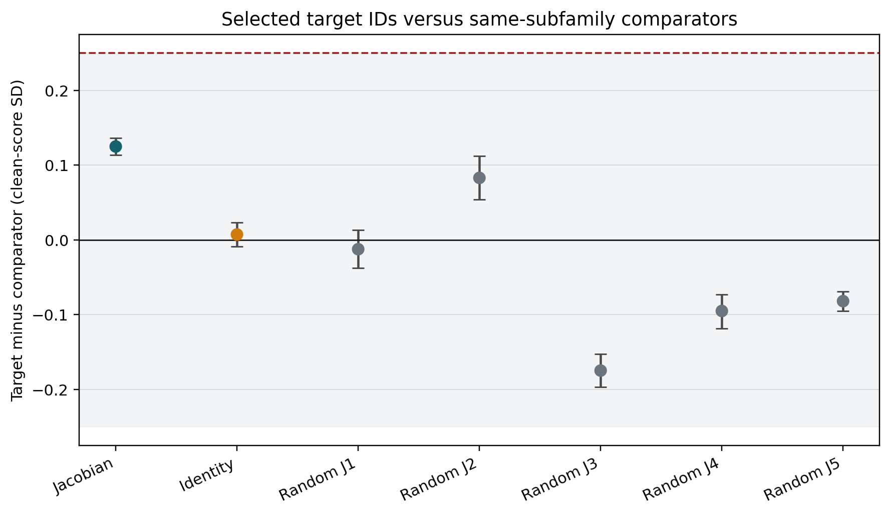

Do the Paper's SAE Features Have a Privileged Fingerprint?
Our earlier audit left two escape hatches open. When we found that an isolated snapshot of a steered model could not be attributed to its steering direction, a fair critic could reply: maybe your reader was too weak, and maybe your controls were too easy. This follow-up closes both hatches at once. We steer the model with hard negatives (features whose labels are semantically nearby but outside the targets’ label space), with matched alternatives from the same semantic subfamilies as the six original targets, and we try fourteen readers of increasing power, up to a probe that sees the entire 8,192-number internal state.
One honest label first: the preregistered run failed its numerical replay gate, so every number here is exploratory, not confirmatory. With that stated, the picture is consistent: the semantic structure is orderly but smaller than our frozen bar for “material,” the six celebrated feature IDs are practically interchangeable with well-matched neighbors from the same public SAE, and no amount of linear reader capacity turns an isolated state into a steering detector.
Table of Contents
Study status: complete, exploratory (public freeze
7eff43f;
OSF registration f3tpv; result release
478a10d).
From Labels to Specificity
Our earlier work asked whether a Jacobian lens can see SAE steering in Llama 3.3 70B. With a matched clean reference, it sees a strong signed semantic delta. Given only one post-intervention state, it cannot attribute the target steering out of sample.
The six target feature IDs under test come from AE Studio’s public steering-notebook outputs accompanying Berg, de Lucena, and Rosenblatt (2025) — features whose released labels are deception/roleplay-adjacent. (How those IDs were obtained, and why a feature ID is not an explanation, is covered in the earlier post.)
That earlier result left two serious alternatives:
- perhaps the original 67-logit reader was simply too weak; and
- perhaps the six accepted deception/roleplay IDs were being compared with controls that were too easy.
The follow-up raises both bars.
We selected 24 comparators without looking at Jacobian outputs or target outcomes. Eighteen are hard negatives from refusal/safety, hedging/uncertainty, and formality/politeness families (semantically nearby, but label-disjoint from the targets under a frozen mechanical rule). Six are same-subfamily deception/pretending/roleplay alternatives matched one-to-one to the accepted IDs.
Then we tested 14 readers, from the original 67 token logits through the full 8,192-dimensional residual state.
The Design in One Table
| Component | Frozen value |
|---|---|
| Model | Llama 3.3 70B Instruct |
| Intervention site | public Goodfire layer-50 SAE |
| Readout | pinned Neuronpedia Jacobian lens |
| Prompts | 51 template-family representatives |
| Replay rows | 1,581 |
| New semantic rows | 2,448 |
| A1 comparators | 18 hard negatives, six per family |
| A2 comparators | six fixed same-subfamily matches |
| Readers | 14 |
| Validation | crossed prompt-family and target/control-pair holdouts |
| Resampling | 20,000 template-family draws |
Every semantic intervention is evaluated against the same four output lexicons: deception/dishonesty, refusal/safety, hedging/uncertainty, and formality/politeness. Scores subtract a frozen unrelated-token reference and are standardized by clean-prompt variation separately for each transport.
A1: Does Each Family Point to Its Own Lexicon?
For intervention family \(r\) and readout lexicon \(c\), define the oriented, clean-referenced standardized change \(M_{rc}\). The row-specificity contrast is
\[ S_r=M_{rr}-\frac{1}{3}\sum_{c\ne r}M_{rc}. \]In words: how much more does a family move its own lexicon than the average
of the other three? The global A1 statistic averages the four \(S_r\) values.
We froze a material minimum of 0.25 standard deviations before outcomes.

Figure: exploratory real-Jacobian oriented changes. Every diagonal is the largest entry in its row, but the global diagonal-minus-off-diagonal contrast is 0.174, below the frozen 0.25 material threshold.
The pattern is orderly. Every intended diagonal is largest, and all four row
contrasts survive the frozen Holm procedure (a multiplicity correction that
guards against celebrating one lucky row out of four). The global contrast is
0.174 [0.167, 0.182].
That is below 0.25, so the frozen family-specificity verdict is false.
Identity carries a smaller but visible diagonal at
0.133 [0.127, 0.140]. The five singular-spectrum-preserving random-J controls
have global contrasts between -0.015 and 0.014. The real Jacobian alignment
matters descriptively, but the effect is not large enough for our material
criterion.
The hard negatives also answer a narrower concern. None of refusal, hedging,
or formality has material deception leakage under the same 0.25 rule. This
is not a picture where every socially adjacent feature simply looks deceptive.
The Aggregate Hides Feature Heterogeneity
The six accepted IDs do not move together:
| Feature ID | Exploratory Jacobian deception score |
|---|---|
| 30686 | 0.732 |
| 41533 | 0.513 |
| 58667 | 0.362 |
| 22004 | 0.072 |
| 30032 | 0.027 |
| 23893 | -0.010 |
The last row matters. Feature 23893 also failed the earlier static deception projection. Keeping it in every analysis prevents a three-feature success from being narrated as a uniform six-feature mechanism.
A2: Are These Six IDs Privileged?
A feature can have a recognizable label without being uniquely important. To test that, each accepted ID is paired with one fixed alternative from the same pretending, roleplay, or deception subfamily. The pairs were chosen using outcome-masked SAE telemetry and label constraints (that is, without looking at any Jacobian outcome).
The aggregate statistic is target minus matched comparator in the deception readout. We froze two interpretations before outcomes:
- selected-ID advantage: at least
+0.25, with its interval above zero; - practical comparability: the 90% interval lies inside
[-0.25, +0.25].

Figure: exploratory target-minus-comparator effects by transport. The shaded band is the frozen ±0.25 comparability region; the dashed line marks the +0.25 selected-ID-advantage minimum.
For the real Jacobian, the difference is 0.125, with 95% interval
[0.114, 0.136] and 90% interval [0.116, 0.134].
The result is precise, but it is not large. The entire equivalence interval is inside the comparability region. The frozen exploratory verdict is practical comparability, not selected-ID advantage.
This is stronger than saying the six IDs have no signal. Several clearly do. It says that carefully matched alternatives from the same public SAE carry similar deception-related Jacobian effects. The index numbers themselves are not privileged coordinates.
Does More Reader Capacity Recover Provenance?
The reader ladder tests the remaining escape hatch.
The original reader is a 67-dimensional logistic regression over frozen lexicon logits. We add:
- identity and five random-J versions of the same 67 logits;
- 67 principal components of the raw residual (fit only inside each training fold, so no test data leaks into the projection);
- five fixed 67-dimensional random projections (a capacity control: is any set of 67 directions enough?); and
- the full 8,192-dimensional residual state (the supervised capacity ceiling).
Each reader must generalize simultaneously to a held-out prompt fold and a held-out target/control feature pair. This prevents prompt memorization and feature-ID memorization.

Figure: exploratory macro AUROC under crossed holdouts. Black is chance; red is the frozen 0.60 material threshold. Every reader remains near 0.50.
| Reader | Macro AUROC | 95% interval |
|---|---|---|
| Jacobian 67 logits | 0.4985 |
[0.4956, 0.5011] |
| Identity 67 logits | 0.5020 |
[0.4999, 0.5047] |
| Residual PCA-67 | 0.5101 |
[0.5063, 0.5159] |
| Full residual 8192 | 0.5068 |
[0.5046, 0.5108] |
| Fixed random projections | 0.4974 to 0.5029 |
near chance |
None approaches the frozen 0.60 material threshold. Some intervals are
narrowly above 0.5, but effects of 0.006 or 0.010 AUROC are not an operational
steering detector.
The full residual result is the key negative control. The original null is not explained by compressing the state to 67 vocabulary logits. More linear capacity does not recover out-of-sample provenance here.
What This Adds to the Earlier Result
The earlier experiment established an access-model split:
- with a matched clean prefix, a signed Jacobian delta strongly characterizes several target directions;
- with only an isolated post-state, target attribution is at chance.
This follow-up sharpens the second half. The failure is not fixed by a full-residual linear reader, and the accepted IDs are practically comparable to matched alternatives from the same semantic subfamilies.
That suggests a useful hierarchy:
- feature label: which texts activate a coordinate;
- causal semantic effect: which readout changes when it is steered;
- selected-ID specificity: whether that coordinate outperforms matched alternatives; and
- state-only provenance: whether an auditor can infer the intervention from a new isolated state.
Evidence at rung 1 or 2 does not imply rung 3 or 4.
What We Cannot Claim
The registered replay gate failed. Therefore we cannot call these endpoint results confirmatory, even though the calculations and controls were frozen before outcomes.
We also cannot infer:
- that every feature in the SAE is interchangeable;
- that the six paper IDs are meaningless;
- that nonlinear or sequence-level provenance detection is impossible;
- that a proprietary Goodfire intervention would match this public implementation; or
- anything about hidden belief, intent, deception, or consciousness.
The narrower exploratory conclusion is defensible: under this public Llama 70B SAE/J-lens setup, hard-negative semantics are orderly but below our material specificity threshold, the accepted IDs do not beat fixed same-subfamily comparators by a material amount, and no frozen linear state reader detects their provenance out of sample.
Reproducibility
| Artifact | Location |
|---|---|
| Public registration | osf.io/f3tpv |
| Public residual release (1.29 GiB, BF16 shards) | osf.io/sz2gb |
| Frozen protocol | docs/LLAMA70B_SAE_JLENS_V2_PROTOCOL.md |
| Post-outcome amendment | docs/LLAMA70B_SAE_JLENS_V2_POST_OUTCOME_AMENDMENT_20260712.md |
| Result summary | docs/LLAMA70B_SAE_JLENS_V2_RESULTS.md |
| Complete Git release | data/sae_jlens_audit/confirmatory_v2_20260712/ |
| Independent audit | post_failure/analysis/independent_audit.json |
References
- Berg, de Lucena, and Rosenblatt (2025), Large Language Models Report Subjective Experience Under Self-Referential Processing.
- Gurnee et al. (2026), Verbalizable Representations Form a Global Workspace in Language Models.
- Goodfire, Llama 3.3 70B layer-50 SAE.
- Neuronpedia, Llama 3.3 70B Jacobian-lens release.
- Praxagent, Can a Jacobian Lens Detect SAE Steering? (the v1 study).
- Praxagent, When a Preregistered Numerical Gate Fails (the evidence-status companion).
- Praxagent, How to Read an SAE Feature ID (primer on feature-ID provenance).